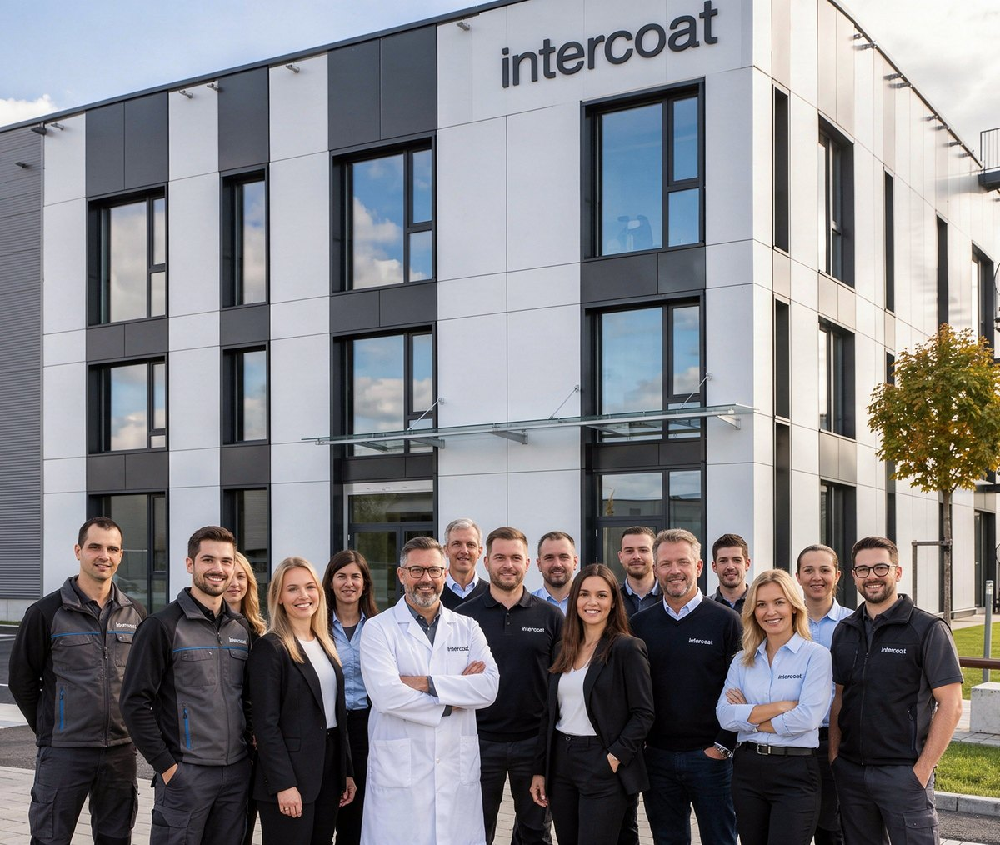

Select your language
Choose a language on intercoat.eu
No languages found.
Powder coatings
tailored to your needs
Start with the product: its substrate, use, finish and coating line define the right powder.
A manufacturer ready to contribute to the technical discussion

Intercoat is a powder coating manufacturer for companies that produce metal products and need a coating that fits their application, not only their colour reference.
The people behind Intercoat work with the questions that usually decide whether a coating will be suitable for production: the substrate, the shape of the part, the required finish, the curing process, functional surface needs and the documents required before testing.
This is why our starting point is simple: show us the product, the surface and the task it has to perform. From there, we can help define the coating direction, prepare the technical information and plan the next practical step.
Intercoat is a powder coating manufacturer focused on metal products, functional surfaces and practical production requirements.
We develop and supply powder coating systems for applications where colour is only part of the task. Surface quality, stable application, substrate behaviour, curing conditions and technical documentation also matter.
Certified quality
Certificates and technical documents help your team verify compliance before production starts.
CATAS
QUALICOAT
TÜV Rheinland
ISO 9001:2015
ISO 14001:2015
From product requirement to coating solution
A powder coating affects more than colour. It affects application, waste, surface quality, durability and the final look of the product.
Start with the application
What is the product? Where will it be used? What substrate and finish does it need?
Match the coating
Choose the right series, colour, texture and performance level for the product and coating line.
Provide the documents
Get the TDS, SDS and certificates your production, purchasing and quality teams need.
Plan the trial
Discuss line conditions, typical defects and requirements before running a larger production test.
Choose by requirement
The right coating starts with the job it has to do.
Interior use
For indoor metal products, furniture components, cabinets and general industrial parts.
Exterior durability
For products exposed to weather, UV and changing outdoor conditions.
Primers and corrosion protection
For aluminum and metal substrates that need a stable base for the next coating layer.
Metallic and decorative effects
Premium metallics, antique effects and textures for architecture, wheel rims and design.
Before switching powder, check the line
The right coating starts with the job it has to do.
Changing a coating supplier should not start with guesswork.
Share the product, substrate, current coating issue and production conditions. Intercoat can review the application requirements, suggest suitable powder options and define the next practical step.
Project requirements, testing conditions and responsibilities can be agreed in advance.
01What can be discussed
Substrate and surface preparationApplication settingsFilm thickness requirementsCuring conditionsTypical defectsWaste pointsRequired data sheets and certificates
02Result
A clearer route to testing: suitable coating options, technical documents and practical recommendations for the process.
Series and downloads
Intercoat series are grouped by application and performance. Use the TDS to check technical data before testing or production.
Polyester coating for interior use.
Low-temperature-curing polyester coating for interior use.
Epoxy-polyester primer for exterior use.
Weather-resistant polyester with decorative effects.
Polyester architectural coating for standard exterior use.
Bonded metallic coating for exterior use.
High-performance polyester approved to QUALICOAT Class 1.
DocumentationTDS / SDS
Less waste in the coating process. Lower environmental impact. A cleaner way to manage powder waste.
Learn more about sustainabilityThink Nature
Powder that misses the part does not have to become waste.
Think Nature is Intercoat’s approach to keeping useful material in circulation for longer - through collection, sorting, recovery and responsible recycling.
It is a cleaner way to work with powder: less waste in the coating process, better material use and lower environmental impact.
Examples of recoverable powder streams:
Tell us about your coating needs
Share a few details about your products and coating requirements.